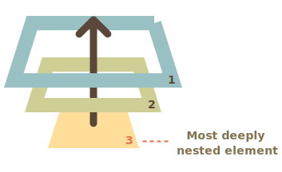

让我们从一个示例开始。
处理程序（handler）被分配给了 <div>，但是如果你点击任何嵌套的标签（例如 <em> 或 <code>），该处理程序也会运行：
<div onclick="alert('The handler!')">
<em>If you click on <code>EM</code>, the handler on <code>DIV</code> runs.</em>
</div>这是不是有点奇怪？如果实际上点击的是 <em>，为什么在 <div> 上的处理程序会运行？
冒泡（bubbling）原理很简单。
当一个事件发生在一个元素上，它会首先运行在该元素上的处理程序，然后运行其父元素上的处理程序，然后一直向上到其他祖先上的处理程序。
假设我们有 3 层嵌套 FORM > DIV > P，它们各自拥有一个处理程序：
<style>
body * {
margin: 10px;
border: 1px solid blue;
}
</style>
<form onclick="alert('form')">FORM
<div onclick="alert('div')">DIV
<p onclick="alert('p')">P</p>
</div>
</form>点击内部的 <p> 会首先运行 onclick：
<p> 上的。<div> 上的。<form> 上的。document 对象。
因此，如果我们点击 <p>，那么我们将看到 3 个 alert：p -> div -> form。
这个过程被称为“冒泡（bubbling）”，因为事件从内部元素“冒泡”到所有父级，就像在水里的气泡一样。
这句话中的关键词是“几乎”。
例如，`focus` 事件不会冒泡。同样，我们以后还会遇到其他例子。但这仍然是例外，而不是规则，大多数事件的确都是冒泡的。父元素上的处理程序始终可以获取事件实际发生位置的详细信息。
引发事件的那个嵌套层级最深的元素被称为目标元素,可以通过 event.target 访问。
注意与 this（=event.currentTarget）之间的区别：
event.target —— 是引发事件的“目标”元素，它在冒泡过程中不会发生变化。this —— 是“当前”元素，其中有一个当前正在运行的处理程序。例如，如果我们有一个处理程序 form.onclick，那么它可以“捕获”表单内的所有点击。无论点击发生在哪里，它都会冒泡到 <form> 并运行处理程序。
在 form.onclick 处理程序中：
this（=event.currentTarget）是 <form> 元素，因为处理程序在它上面运行。event.target 是表单中实际被点击的元素。一探究竟：
[codetabs height=220 src="bubble-target"]
event.target 可能会等于 this —— 当点击事件发生在 <form> 元素上时，就会发生这种情况。
冒泡事件从目标元素开始向上冒泡。通常，它会一直上升到 <html>，然后再到 document 对象，有些事件甚至会到达 window，它们会调用路径上所有的处理程序。
但是任意处理程序都可以决定事件已经被完全处理，并停止冒泡。
用于停止冒泡的方法是 event.stopPropagation()。
例如，如果你点击 <button>，这里的 body.onclick 不会工作：
<body onclick="alert(`the bubbling doesn't reach here`)">
<button onclick="event.stopPropagation()">Click me</button>
</body>如果一个元素在一个事件上有多个处理程序，即使其中一个停止冒泡，其他处理程序仍会执行。
换句话说，`event.stopPropagation()` 停止向上移动，但是当前元素上的其他处理程序都会继续运行。
有一个 `event.stopImmediatePropagation()` 方法，可以用于停止冒泡，并阻止当前元素上的处理程序运行。使用该方法之后，其他处理程序就不会被执行。冒泡很方便。不要在没有真实需求时阻止它：除非是显而易见的，并且在架构上经过深思熟虑的。
有时 `event.stopPropagation()` 会产生隐藏的陷阱，以后可能会成为问题。
例如：
1. 我们创建了一个嵌套菜单，每个子菜单各自处理对自己的元素的点击事件，并调用 `stopPropagation`，以便不会触发外部菜单。
2. 之后，我们决定捕获在整个窗口上的点击，以追踪用户的行为（用户点击的位置）。有些分析系统会这样做。通常，代码会使用 `document.addEventListener('click'…)` 来捕获所有的点击。
3. 我们的分析不适用于被 `stopPropagation` 所阻止点击的区域。太伤心了，我们有一个“死区”。
通常，没有真正的必要去阻止冒泡。一项看似需要阻止冒泡的任务，可以通过其他方法解决。其中之一就是使用自定义事件，稍后我们会介绍它们此外，我们还可以将我们的数据写入一个处理程序中的 `event` 对象，并在另一个处理程序中读取该数据，这样我们就可以向父处理程序传递有关下层处理程序的信息。事件处理的另一个阶段被称为“捕获（capturing）”。它很少被用在实际开发中，但有时是有用的。
DOM 事件标准描述了事件传播的 3 个阶段：
下面是在表格中点击 <td> 的图片，摘自规范：
也就是说：点击 <td>，事件首先通过祖先链向下到达元素（捕获阶段），然后到达目标（目标阶段），最后上升（冒泡阶段），在途中调用处理程序。
之前，我们只讨论了冒泡，因为捕获阶段很少被使用。通常我们看不到它。
使用 on<event> 属性或使用 HTML 特性（attribute）或使用两个参数的 addEventListener(event, handler) 添加的处理程序，对捕获一无所知，它们仅在第二阶段和第三阶段运行。
为了在捕获阶段捕获事件，我们需要将处理程序的 capture 选项设置为 true：
elem.addEventListener(..., {capture: true})
// 或者，用 {capture: true} 的别名 "true"
elem.addEventListener(..., true)capture 选项有两个可能的值：
false（默认值），则在冒泡阶段设置处理程序。true，则在捕获阶段设置处理程序。请注意，虽然形式上有 3 个阶段，但第 2 阶段（“目标阶段”：事件到达元素）没有被单独处理：捕获阶段和冒泡阶段的处理程序都在该阶段被触发。
让我们来看看捕获和冒泡：
<style>
body * {
margin: 10px;
border: 1px solid blue;
}
</style>
<form>FORM
<div>DIV
<p>P</p>
</div>
</form>
<script>
for(let elem of document.querySelectorAll('*')) {
elem.addEventListener("click", e => alert(`Capturing: ${elem.tagName}`), true);
elem.addEventListener("click", e => alert(`Bubbling: ${elem.tagName}`));
}
</script>上面这段代码为文档中的 每个 元素都设置了点击处理程序，以查看哪些元素上的点击事件处理程序生效了。
如果你点击了 <p>，那么顺序是：
HTML -> BODY -> FORM -> DIV（捕获阶段第一个监听器）：P（目标阶段，触发两次，因为我们设置了两个监听器：捕获和冒泡）DIV -> FORM -> BODY -> HTML（冒泡阶段，第二个监听器）。有一个属性 event.eventPhase，它告诉我们捕获事件的阶段数。但它很少被使用，因为我们通常是从处理程序中了解到它。
```smart header="要移除处理程序，removeEventListener 需要同一阶段"
如果我们 addEventListener(..., true)，那么我们应该在 removeEventListener(..., true) 中提到同一阶段，以正确删除处理程序。
````smart header="同一元素的同一阶段的监听器按其设置顺序运行"
如果我们在同一阶段有多个事件处理程序，并通过 `addEventListener` 分配给了相同的元素，则它们的运行顺序与创建顺序相同：
```js
elem.addEventListener("click", e => alert(1)); // 会先被触发
elem.addEventListener("click", e => alert(2));
## 总结
当一个事件发生时 —— 发生该事件的嵌套最深的元素被标记为“目标元素”（`event.target`）。
- 然后，事件从文档根节点向下移动到 `event.target`，并在途中调用分配了 `addEventListener(..., true)` 的处理程序（`true` 是 `{capture: true}` 的一个简写形式）。
- 然后，在目标元素自身上调用处理程序。
- 然后，事件从 `event.target` 向上移动到根，调用使用 `on<event>` 和没有第三个参数的，或者第三个参数为 `false/{capture:false}` 的 `addEventListener` 分配的处理程序。
每个处理程序都可以访问 `event` 对象的属性：
- `event.target` —— 引发事件的层级最深的元素。
- `event.currentTarget`（=`this`）—— 处理事件的当前元素（具有处理程序的元素）
- `event.eventPhase` —— 当前阶段（capturing=1，target=2，bubbling=3）。
任何事件处理程序都可以通过调用 `event.stopPropagation()` 来停止事件，但不建议这样做，因为我们不确定是否确实不需要冒泡上来的事件，也许是用于完全不同的事情。
捕获阶段很少使用，通常我们会在冒泡时处理事件。这背后有一个逻辑。
在现实世界中，当事故发生时，当地警方会首先做出反应。他们最了解发生这件事的地方。然后，如果需要，上级主管部门再进行处理。
事件处理程序也是如此。在特定元素上设置处理程序的代码，了解有关该元素最详尽的信息。特定于 `<td>` 的处理程序可能恰好适合于该 `<td>`，这个处理程序知道关于该元素的所有信息。所以该处理程序应该首先获得机会。然后，它的直接父元素也了解相关上下文，但了解的内容会少一些，以此类推，直到处理一般性概念并最后运行的最顶部的元素为止。
冒泡和捕获为“事件委托”奠定了基础 —— 一种非常强大的事件处理模式，我们将在下一章中进行研究。